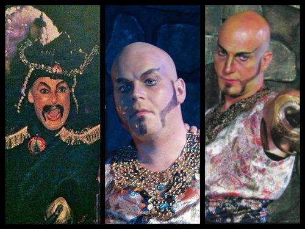

#4 Ismailittene
Fjerde episode av Du store all verden, altså. Inneholder blant annet en god del om den muslimsk minoriteten ismailittene.
Her får du blant annet svar på hva disse herrene har å gjøre med den øverste lederen for den muslimsk minoriteten ismailittene.
